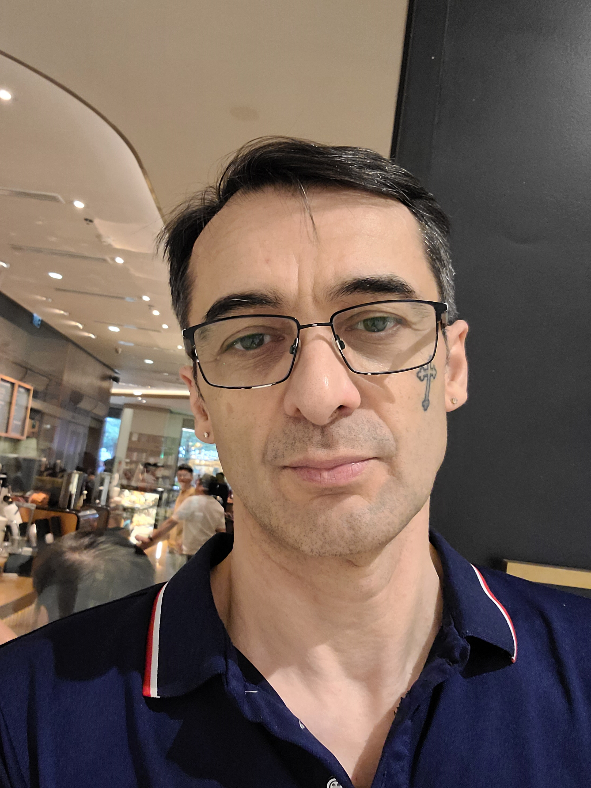

★★★★★
ELITE
5+ years of consistency
100%
Optimal adoption of fully personalized and refined Pro Longevity protocols. Longevity has become a natural way of life.
Live Longer. Stay Younger. Live Better.
Imagine reaching your 60s, 70s, 80s and beyond with the strength, energy, mobility, mental sharpness and independence to continue enjoying an extraordinary life.
A Clear Destination. A Personalized Roadmap. A Lifetime of Purpose.
Your future begins with the decisions you make today.
Don't Leave Your Future Entirely to Chance.
Where are you now? Where do you want to be later in life?
Illustrative charts, not measured quality-of-life scores or clinical predictions. The first reflects the founder’s self-reported experience through age 58; the other two depict hypothetical scenarios. Individual outcomes vary.
Discover Your Longevity Potential
Fifteen questions. A moment to reflect on your future. Answer fitness questions based on your existing abilities; do not attempt a physical test for this assessment. Free, private and no registration required.
Educational self-assessment only. Not a validated medical test, biological age measurement or prediction of health outcomes. Core habits carry twice the weight of optional tests and advanced fitness benchmarks. Not-applicable answers are excluded from the score. Methylation testing is optional and not necessary for healthy aging. Answers stay in your browser.
We spend years investing in our education, careers, businesses and financial security. How much do we invest in preserving the physical and mental abilities that will allow us to enjoy everything we have achieved?
What is the value of success if we lose the vitality to enjoy it?
For thousands of years, humanity has accepted the familiar limits of lifespan. Advances in genetics, longevity science, supplementation and AI are opening new possibilities, including the ambitious but unproven vision of living 150 years or more.
What if the 60s could one day become the new 30s?
The primary goals of MOCIOIU PRO LONGEVITY are to delay age-related decline, reverse what can be reversed, maintain vitality, help prevent disease and extend the years of life enjoyed in good health as much as possible.
We need a new mindset. Why wait for tomorrow’s breakthroughs when we can embrace today’s science-informed longevity protocols?
Does feeling healthy today necessarily mean you are aging well? Age-related changes can accumulate before symptoms become apparent. Why wait for problems to appear before taking action?
Start Earlier. Age Smarter. Avoid the 40s and 50s trap. Preserve and Restore Functions. Live Stronger.
CHALLENGE THE THOUSANDS OF YEARS AGING STATUS QUO
The Mocioiu Pro Longevity Method is a science-informed, personalized and affordable lifestyle designed to slow age-related deterioration, reduce the risk of chronic diseases, preserve physical and cognitive performance, and improve or partially reverse certain age-associated functional declines.
Built on four pillars—Understanding Aging, Intelligent and Enjoyable Longevity Protocols, Motivation and Lifelong Transformation, and Affordable Sustainability—the method combines medical checkups, continuous monitoring and intelligent adaptation to help you maintain the best version of yourself.
The goal isn't simply to live longer. It's to remain physically capable, mentally sharp, independent, and full of vitality for as many years as possible.
Recent advances in genetics, epigenetics, cellular rejuvenation and our understanding of the biological mechanisms of aging offer unprecedented hope for the future. Maintaining vitality and an exceptional quality of life well beyond the age of 100 is an increasingly compelling scientific ambition. Within the next few decades, humanity may fundamentally challenge the aging status quo that has defined our existence for thousands of years.
I believe it would be foolish not to at least try to slow the accumulation of age-related damage, preserve our biological functions and take advantage of the latest science-informed longevity protocols. We do not need to wait for tomorrow's scientific breakthroughs to start making better decisions about our health today.
And this is precisely where MOCIOIU PRO LONGEVITY can make a difference—helping you preserve your vitality today while preparing for the scientific possibilities of tomorrow.
In my view, relying solely on conventional medicine has its limitations. Traditional medical approaches often focus more on treating existing damage and managing disease through pharmaceutical interventions than on proactive prevention. I am also concerned about the monopolistic tendencies and corporate influence of the pharmaceutical industry on healthcare priorities. The Mocioiu Pro Longevity Method advocates a paradigm shift toward preventive health, science-informed nutrition, evidence-based natural approaches and continuous lifestyle optimization, alongside appropriate medical care.
Where are you today? What would you like to improve?
Optimal adoption of fully personalized and refined Pro Longevity protocols. Longevity has become a natural way of life.
Highly developed Longevity IQ, disciplined routines and consistent adoption of advanced personalized protocols.
An established longevity lifestyle with consistent nutrition, exercise, sleep optimization and appropriate supplementation.
Building sustainable healthy habits, developing Longevity IQ and progressively adapting personalized protocols.
Embracing a new mindset, introducing essential longevity protocols and establishing healthier daily routines.
The Pro Longevity Lifestyle Rating System is a proprietary educational framework. Percentages represent targeted protocol adoption, not biological age reversal or health improvement scores. Timeframes are indicative milestones, not guaranteed results.
While many longevity companies and labs focus on expensive therapies or promoting products, MOCIOIU PRO LONGEVITY is independent of supplement and nutrition companies and focuses solely on promoting a five-star, proactive longevity lifestyle. We do not sell standalone supplements, nutrition products or ultra-expensive age-reversal therapies. Through more than five years of research, personal trials and consistency, we have developed a healthier lifestyle designed to be sustainable and accessible to everyone.
Interesting budgeting fact: Adopting an Elite five-star longevity lifestyle may reduce monthly grocery bills and help offset the cost of affordable supplements. Actual savings depend on individual needs, food choices and local prices.
In your 20s? Start early to minimize accumulating aging damage. Older? Start today to improve, rebuild and preserve your vitality.
Longevity is for everyone—not just the wealthy or elite.
For Everyone. For Every Age. For Life.
Choose a Pro Longevity package for someone you care about.

At Pro Longevity, I teach five-star, AI-research-informed longevity nutrition and protocols, drawing on more than five years of my personal Pro Longevity lifestyle and health measurements. The sooner you start, the more opportunity you have to reduce avoidable age-related health risks. My clients often struggle with stubborn waist and belly fat, poor health biomarkers associated with inadequate nutrition and exercise, addictions, and unhealthy lifestyle habits. Money alone won’t do it. The gym alone won’t do it. Pro Longevity lifestyle coaching brings nutrition, exercise, sleep, and healthier habits together to help make lasting changes.
I don't believe aging should mean surrendering our vitality. I believe we can challenge the limits of conventional aging, transform how we live, and pursue longer, healthier, more extraordinary lives.
Forget about roaring 40s. That is a given. The problem is I associate a general good feeling and apparent no health problems in our late 40s with nature’s trap. Because many age-related health issues start showing up later in our 50s. The Mocioiu Pro Longevity Method is aiming at addressing this trap. We are talking super fit, perfect biomarkers, full of stamina, mental focus and champion mentality in our 50s, 60s, 70s and beyond. We are talking transformation and rejuvenation. We are talking about the ultimate success.
At 58, I'm an entrepreneur, motivator, software developer, motorcycle racer and lifelong believer in pushing the boundaries of personal performance. For more than five years, I've built my days around nutrition, movement, sleep and health tracking—and transformed how I feel along the way.
At 53 I was on a downhill, fighting addictions, having excess belly and waist fat, high risk lipid panel biomarkers, high risk blood pressure and using a diuretic I never thought I would be able to quit. My Canadian-trained physician told me that I was 53 and that having some health issues at my age was normal. She initially prescribed a vasodilator to treat my high blood pressure, but I experienced tachycardia and ended up making several emergency visits. She then switched me to a diuretic, which helped control my blood pressure but disrupted my sleep with multiple nighttime awakenings. When she also suggested cholesterol-lowering medication, I was concerned about potential side effects and declined. I felt I had reached a dead end. I had to find another way. Then I found inspiration in anti-aging and longevity research and enthusiasts and I owe them my transformation and the last 5 healthy rejuvenate years. As a Longevity Pioneer I am here to tell you that we already have the knowledge and tools needed to slow down and reverse the aging damage. And the sooner someone starts Pro Longevity lifestyle the more chances to prevent age related decline and health preventable problems. By challenging the aging status quo, Longevity Pioneers inspire others to pursue healthier, longer lives. I want to share my journey with you, and if I can help transform your life, improve your health, and support a longer, healthier lifespan, that will be the true meaning of success for me.
I cannot stress enough how beneficial it is to promote longevity and actively prevent age-related decline. Staying fit and healthy after 50 is a virtue, and promoting longevity is an art. At Pro Longevity, we take pride in sharing a new mindset designed to change the way we live and inspire us to strive for the best versions of ourselves. Every reversal of age-related decline, every additional healthy year added to someone’s lifespan, and every new customer who embarks on a healthier lifestyle is a win for us.
Practicing Pro Longevity lifestyle for over five years
58 years - Practicing 5 years + Pro Longevity
Longevity Pioneer & Biohacker
Pro Longevity Founder
Entrepreneur
Software Developer
25 Years Analytics
Health/Finance/Canada/US
Motorcycle Racer
Residence: Richmond Hill, Greater Toronto Area, Canada
Heritage & Nationality: Romanian-born, Canadian citizen. Canada has been home for more than half of my life.
University of Timișoara, Romania — Master of Science (MSc) in Engineering, specializing in Biomedical Engineering
CDI College, Toronto, Canada — Computer Science
Math-Physics High School #1, Timișoara, Romania
Ontario Ministry of Health, Toronto, CanadaCanadian Centre for Occupational Health and Safety, Hamilton, CanadaCharles Schwab, San Francisco, CaliforniaTD Bank, Toronto, CanadaBank of Montreal, Toronto, CanadaMercedes Benz Financial, Mississauga, Canada
Devoted Christian Orthodox
Michael the Brave (Wallachia, Transylvania, Moldova, present day Romania)Decebal (Dacia, present day Romania)Trajan (SPQR Roma)Scipio Africanus (SPQR Roma)Hanibal BarcaLeonidas (Sparta)
Constantin BrancusiAlberto Giacometti
Marc MarquezValentino RossiOscar De La HoyaMichael JordanIlie NastasePete SamprasRoger FedererDavid PopoviciCristian ChivuSidney CrosbyDoug GilmourHockey CanadaJuventus TorinoAEK AthenaRonaldo NazarioPaolo MaldiniUniversitatea CraiovaIlie BalaciToronto Blue Jays
Angela SimileaMaria DragomiroiuMetallicaAC/DCDua LipaDire StraitsGiacomo RossiniMozartChopinEros RamazottiMiki TheodorakisNana MouskouriDemis RussosDwight YoakamTexas Tornados
Ducati PanigaleKawasaki NinjaFord Mustang GT 5.0
“I don’t believe aging should mean surrendering our vitality. We should all challenge the thousand-year aging status quo.”
Craiova, Oltenia, RomaniaToronto, Ontario, CanadaRoma, ItaliaSantorini, GreeceTransfăgărășan Passage, RomaniaSan Francisco, CaliforniaMendocino, California
Longevity and Anti-aging research companies
Longevity Pioneers and longevity and age reversals clinical studies
Advanced AI genetics research
Visionaries and forward thinking celebrities
A strong belief we will break the aging status quo
The government's hesitation to invest in and support longevity and anti-aging research
The inertia of medical schools in continuing traditional approaches that, in my view, emphasize treatment over meaningful prevention
The dominance of major social media platforms (Meta, TikTok, and others) in advertising and distributing information about longevity trends, research, clinical studies, ideas, and visionary pioneers
What I see as insufficient investment by corporations, political leaders, and governments in helping citizens live healthier, longer lives
Hold governments and elected officials publicly accountable for whether they support and fund the prevention of age-related health risks, longevity education, and healthier lifestyles. Voters should be able to assess their representatives’ commitments and actions when elections come around.
The World Health Organization (WHO), a specialized agency of the United Nations, should do more to advance healthy-aging research, prevention, public awareness, and practical longevity education. Longevity should not be an elite privilege reserved for the wealthy. It should be taught in schools, encouraged throughout life, and made accessible to everyone through reliable information and affordable ways to build healthier habits.
Corporations that market products proven to cause significant harm to health should face stronger evidence-based regulation, including restrictions or appropriate health-related taxes where justified. Political leaders who accept funding from such companies should be transparent about those relationships and held accountable by voters for their decisions.
“I didn't want healthy aging to be something I only read about. I wanted to build it into the way I live—every single day.”
I wish I had started earlier. In our 20s, longevity is rarely on our radar. In our 30s and 40s, many of us still don’t take it seriously. Then, after 50, health issues may begin to appear—some of which could have been prevented or delayed. That is the real problem: preventing health problems is often easier than treating them after they develop. This may be the most important message I have for every reader: start investing in your longevity early, just as you would start saving for your financial future. The habits you build today can pay off in healthier years ahead, support a longer healthspan, and reduce your risk of preventable health problems later in life.
My story isn't about a dramatic 30-day challenge. It's about years of showing up for myself. In my early 50s, I was facing health indicators that concerned me: higher blood pressure, cholesterol risk and excess body fat. I knew I wanted a different future.
At 53, I understood that a longevity lifestyle begins with a change in mindset. It means putting your health and well-being first—before addictions, before the demands of an employer, before an unsupportive or toxic partner, and before pleasures or activities that may accelerate age-related decline. It also means finding the willpower to change, confront addictions, and adapt. The transition may be difficult at first, but I believe that, with time, you can adapt, embrace and enjoy your new lifestyle—and one day wonder why you didn't start earlier.
I believe the status quo surrounding how we live, how we prevent age-related decline, and how medicine is taught and practiced needs to evolve—even in this new era of advanced AI research. We should place greater emphasis on prevention and push the boundaries of human health, performance and lifespan toward a new standard.
That is why I admire longevity and anti-aging pioneers and enthusiasts. They challenge conventional assumptions and encourage us to explore what may be possible beyond today's expectations. I am originally from Oltenia, Wallachia, in southern Romania—a place whose people I have always associated with ambition and a fascination for extraordinary achievements. In Romania, I am what we call an Oltean. With a mixed Romanian, Greek and Italian background, I was raised in a Spartan spirit of self-discipline and total dedication to becoming the best version of myself.
I am also a proud father of four, and I have raised my children with the same spirit of discipline, ambition, self-improvement, and the determination to become the best versions of themselves. Today, one of my greatest passions is passing on the principles of my Pro Longevity lifestyle—teaching them that true success begins with protecting their health, investing in their future well-being, and embracing longevity as a lifelong mindset, not something to think about only when aging begins to take its toll.
In Grade 12, I was my high school’s top soccer scorer and a champion. I believe that when we set a goal, we should commit to achieving it—and enjoy the journey. I owe much of my success to my parents, who pushed me to excel academically and never stop daring to dream. Dreamers, I believe, are happy people: if a dream remains a dream, you can cherish it; if it comes true, you can celebrate with extraordinary joy. My mission is to inspire people to dream that we can break through the thousands-of-years-old status quo of aging and age-related decline. We must dare to see beyond what we cannot yet see. Constantin Brâncuși was one of those extraordinary dreamers. He dared to imagine what others could not—or refused to—see.
I believe a time will come when someone will challenge the current limits of healthy aging and thrive with vitality and stamina well beyond 100 years. When that happens, more people may begin to take longevity seriously and make it a priority in their lives. Until then, pioneers and those inspired by them will continue questioning the status quo and exploring new possibilities.
One of the greatest gifts we can give someone is the inspiration to take the prevention of age-related decline seriously. Longevity pioneers help change mindsets by showing why it is worth starting early: the habits we build today can support better health and help reduce the risk of problems later in life. The ultimate limits of human lifespan remain unknown, but I believe prevention will be central to a new era of longevity and well-being—and more accessible to most people than emerging, often costly age-reversal therapies.
You do not need a large budget to begin investing in your longevity. While advanced anti-aging and age-reversal treatments are still evolving, many foundational practices—thoughtful nutrition, regular movement, restorative sleep, appropriate health monitoring and consistent routines—are already within reach. What matters is building an evidence-informed, sustainable system, practicing it with discipline and consistency, and learning from longevity pioneers who are challenging assumptions about healthy aging and human potential.
With 25 years of experience in analytics across Health & Finance serving multiple Fortune Top 1000 clients, I have built my career around data, performance, and informed decision-making. As a software developer, I naturally think in systems: establish a baseline, build a process, measure progress and improve it. As a motorcycle racer, I understand the value of physical readiness, focus and discipline. I brought both mindsets to longevity.
My inspiration came from the latest research into aging and longevity, as well as the ideas and experiences shared by fellow anti-aging enthusiasts and pioneers. I studied different approaches, tested what fit my own lifestyle, and learned from tracking my progress over time. Eventually, I brought those influences together into my own Pro Longevity protocols—a personal, evolving system built around nutrition, supplements, movement, sleep, recovery and consistency.
I developed a repeatable routine around food, supplements, exercise, sleep and recovery. Instead of constantly switching plans, I stayed consistent with the same core approach for more than five years, refining details when needed.
Today, at 58, I report weighing 70 kg at 183 cm, having lost approximately 15 kg of fat/weight, sleeping better, feeling fitter and recording blood pressure around 120/75. My cholesterol measurements also improved compared with the risk levels I experienced at 53. These are my personal results, not a promise of anyone else's.
Why Pro Longevity? Because I want to share the habits, structure and persistence behind my experience—not sell a shortcut, but help others start building a healthier long-term routine of their own.
My own account of the changes I experienced while maintaining consistent lifestyle protocols. These observations are self-reported; clinical measurements and interpretations should be assessed by qualified professionals.
*No claim of “perfect biomarkers” or “athletic cholesterol” is made without current laboratory reference ranges and clinical verification. Discontinuing a prescribed diuretic should only occur with the prescribing clinician's guidance. Individual experiences do not establish that a routine treats or prevents disease.
Understand Aging. Prevent Disease. Reverse Functional Decline. Preserve Vitality.
A Science-Informed, Intelligent, Personalized, Measurable and Sustainable Longevity Lifestyle for Everyone.
The Mocioiu Pro Longevity Method is a comprehensive lifestyle framework designed to prevent and delay age-related deterioration, minimize avoidable aging damage, reduce chronic disease risks, and improve or partially reverse certain age-associated functional declines.
We believe aging should not mean surrendering our strength, cardiovascular fitness, mental sharpness, mobility, sexual vitality, independence or quality of life.
Our ambition is to extend healthspan, not simply lifespan, helping people preserve physical strength, cardiovascular capacity, cognitive performance, sexual health and overall vitality for as many years as possible.
If you're in your 20s, now is an ideal time to start. Early prevention offers an opportunity to reduce decades of accumulating health risks and preserve your body's functional capacity.
If you're older, start today. Whether you're in your 40s, 60s, 80s or beyond, meaningful improvements may still be possible.
With appropriate interventions, certain declines in muscular strength, cardiovascular fitness, metabolic health, mobility and sexual function may be improved or partially reversed.
Start young to protect your future self. Start later to restore what you can and maintain the best version of yourself possible.
The Mocioiu Method emphasizes:
Understand how aging affects the body, how damage and risk factors accumulate, and which aspects of deterioration may be prevented, delayed, improved or partially reversed.
Knowledge enables earlier action and smarter longevity decisions.
Develop personalized, science-informed protocols integrating nutrition, supplementation, exercise, sleep and recovery to prevent age-related decline, preserve physiological function, improve measurable health and performance, and support lifelong vitality.
Protocols should be intelligent, targeted, adaptable, enjoyable, affordable and sustainable, evolving with individual needs, health measurements and scientific evidence.
Healthy living should be a pleasure, not a punishment—a coordinated, enjoyable and sustainable lifestyle for life.
Develop the motivation, discipline and resilience required to overcome unhealthy habits, address harmful addictions and sustain positive lifestyle changes.
Transformation begins with mindset and succeeds through consistency.
Longevity is a lifestyle for everyone, not just the wealthy or elite.
The Mocioiu Method prioritizes affordability, intelligent budgeting and sustainable strategies that can be adapted to different incomes, ages and circumstances.
Effective longevity should not depend on expensive clinics, luxury treatments or unlimited financial resources.
You do not need to be wealthy to invest in your longevity. You need knowledge, motivation, consistency and a smart plan that fits your life.
Longevity should be a universal opportunity, not an exclusive privilege.
A personalized longevity lifestyle should evolve with your body, your health measurements and your changing needs.
The Mocioiu Method follows a continuous, evidence-informed cycle:
MEDICAL CHECKUPS → PERSONALIZED PROTOCOLS → MONITORING → EVALUATION → ADAPTATION → REPEAT
Establish an informed starting point through appropriate physician-led evaluations, preventive screenings and relevant health measurements.
Develop intelligent, targeted, enjoyable and adaptable lifestyle protocols aligned with individual health status, age, objectives and resources.
Track relevant health indicators, physical and cognitive performance, well-being, progress and potential adverse effects.
Compare results with individual baselines and realistic goals, identifying improvements, emerging risks and areas requiring attention.
Refine protocols based on measurable outcomes, medical guidance, evolving scientific evidence and changing personal needs.
Our Principle: Assess. Personalize. Monitor. Evaluate. Adapt. Repeat.
The objective is not to follow one rigid protocol forever, but to develop a dynamic, personalized longevity system that evolves throughout life.
Medical evaluations and treatments remain under qualified healthcare professionals' supervision.
Prevent what can be prevented. Delay what can be delayed. Improve what can be improved. Restore what can be restored. Preserve what matters most.
The Mocioiu Pro Longevity Method is not simply a diet, fitness program or supplementation routine. It is a lifelong philosophy combining aging science, personalized lifestyle protocols, medical checkups, continuous monitoring, intelligent adaptation, motivational support and financial sustainability.
While no lifestyle method can guarantee prevention of cancer, Alzheimer's disease or cardiovascular disease—or reverse biological aging as a whole—evidence-based interventions can reduce certain risks and improve aspects of age-associated functional decline.
Our vision is to make longevity an accessible, measurable and enjoyable lifelong pursuit, helping everyone maintain the strongest, healthiest, sharpest and most capable version of themselves for as long as possible.
Start Earlier. Age Smarter. Monitor Progress. Adapt Continuously. Live Stronger.
For Everyone. For Every Age. For Life.
I don't believe in chasing a new miracle every week. My philosophy is to build a sustainable routine, observe how it works, measure progress, and make thoughtful improvements.
Longevity is not a short-term challenge. It is a lifelong investment in your future self. I believe the greatest benefits come from taking action early, reducing avoidable health risks, and consistently supporting strength, vitality, and resilience.
Over five years, I've learned that meaningful progress doesn't necessarily require expensive treatments or extreme interventions. It requires a well-structured, science-informed system built around nutrition, movement, sleep, recovery, health monitoring, and discipline.
My Pro Longevity philosophy is simple: start early, measure what matters, improve continuously, and think in decades—not days.
Longevity IQ matters more than math, business, or financial IQ when it comes to protecting what makes every achievement worthwhile: your health. Success without health loses its meaning. Through Pro Longevity, I teach Longevity IQ—the practical knowledge, habits, and decisions that help people invest in their health and vitality for life.
For over five years, I've made longevity a way of life. Through science-informed nutrition, disciplined routines, and measurable progress, my mission is to challenge conventional thinking about healthy aging and explore the possibilities of lifelong vitality and human performance. I want to make the principles of a longevity-focused lifestyle understandable, practical, and accessible to people of all ages and budgets—because taking meaningful steps toward a healthier future should not depend on wealth or expensive treatments.
A repeatable, plant-forward eating pattern and mindful meal timing that I can maintain for years—not days.
A consistent personal supplement routine, with attention to evidence, potential interactions and medical guidance.
Regular exercise and physical activity that support my goals, fitness and love of motorcycle racing.
Consistent sleep habits and recovery practices as non-negotiable parts of my daily system.
Track trends in blood pressure, body weight, sleep and relevant biomarkers, with clinical interpretation when needed.
Make routines simple enough to repeat and meaningful enough to keep improving over the long term.
An educational starting point based on the principles that shaped my long-term approach—not a promise of seven-day transformation.
The Mocioiu Pro Longevity Method is for anyone who refuses to accept age-related decline as an inevitable loss of vitality and quality of life.
You do not need to be wealthy, athletic or exceptionally disciplined to begin. You need the desire to improve and the willingness to act.
Pro Longevity is not about perfection. It is about progress, consistency and becoming the best version of yourself at any age.
Your age is not a barrier. Your mindset is your starting point.
Five Levels. Five Stars. One Mission.
Longevity is not an overnight transformation. It is a progressive lifestyle evolution built on knowledge, discipline, consistency and continuous refinement of personalized protocols.
Optimal adoption of fully personalized and refined Pro Longevity protocols. Longevity has become a natural way of life.
Highly developed Longevity IQ, disciplined routines and consistent adoption of advanced personalized protocols.
An established longevity lifestyle with consistent nutrition, exercise, sleep optimization and appropriate supplementation.
Building sustainable healthy habits, developing Longevity IQ and progressively adapting personalized protocols.
Embracing a new mindset, introducing essential longevity protocols and establishing healthier daily routines.
The ultimate objective is to achieve and maintain a five-star Pro Longevity lifestyle. However, even achieving one or two stars represents meaningful progress toward a healthier future.
You do not need to be wealthy to become a five-star Pro Longevity enthusiast. You need knowledge, commitment, patience and consistency.
Longevity cannot be achieved through occasional efforts. It must become a way of life.
Where do you want to be in one, two or five years?
Start at your own pace. Build your Longevity IQ. Earn your stars. Preserve your vitality.
Redefine Your Future.
The Pro Longevity Lifestyle Rating System is a proprietary educational framework. Percentages represent targeted protocol adoption, not biological age reversal or health improvement scores. Timeframes are indicative milestones, not guaranteed results.
Four program options. One philosophy. A healthier, stronger future.
Choose a Pro Longevity package for someone you care about.
All Pro Longevity protocols and recommendations are based on my five-plus years of personal experience, continuous research, practical refinement and best observed results.
Invest in your vitality. Preserve your independence. Redefine your future.
Don’t just buy supplements. Learn how to build a longevity lifestyle that can serve you for the rest of your life.
Secure checkout via PayPal
Your Personalized Longevity Transformation
Start living the Mocioiu Pro Longevity Method with personalized guidance, practical protocols and your first two months of supplements.
All Pro Longevity protocols and recommendations are based on my five-plus years of personal experience, continuous research, practical refinement and best observed results.
Invest in your vitality. Preserve your independence. Redefine your future.
Don’t just buy supplements. Learn how to build a longevity lifestyle that can serve you for the rest of your life.
Supplement selection is subject to individual suitability and clinician review. Shipping availability and any additional shipping costs confirmed before purchase.
Secure checkout via PayPal

All Pro Longevity protocols and recommendations are based on my five-plus years of personal experience, continuous research, practical refinement and best observed results.
Supplement selection is subject to individual suitability and clinician review. Shipping availability and any additional shipping costs confirmed before purchase.
Submit a confidential inquiry to discuss a private live-in longevity coaching arrangement. No obligation to book.
Subject to availability and a mutually agreed scope of services. Educational lifestyle coaching only; no medical diagnosis, treatment, or guaranteed health outcomes.
Each participant purchases their own supplements according to individual needs, budget and medical suitability. Additional expenses are arranged separately before booking.
Submit a confidential inquiry. No obligation to book.
Educational lifestyle coaching only; no medical diagnosis, treatment or guaranteed health outcomes.
+ $99 USD/month
For individuals launching a local or online Pro Longevity coaching business.
+ $199 USD/month
For established coaches, clinics and wellness entrepreneurs seeking additional local-market launch support and a dedicated city landing page.
+ $499 USD/month
For experienced operators proposing a national network. Territorial development rights and milestones are negotiated individually; exclusivity is not automatic.
Who can apply? Entrepreneurs, wellness coaches, personal trainers, nutrition professionals, healthcare professionals and established wellness businesses who share our mission.
A New Mindset. A New Lifestyle. A New Era of Longevity.
Apply to Become a Pro Longevity PartnerTell us about your experience and preferred partnership. We will review your application and contact you about the next steps.
Applications are reviewed individually. Partner approval, territory, brand use, training, commercial terms and any fees are subject to a signed agreement. No earnings are guaranteed. Partner status is not a medical credential; all partners must act within their qualifications and applicable laws. This business model may be regulated as a franchise in some jurisdictions and will require appropriate legal review before offers are finalized.
Exclusive private experience · By arrangement
Introduce an individual or family interested in our Celebrity & Family Private Live-In Longevity Coaching. Earn 20% of eligible coaching fees received when your referred client completes a qualifying booking.
Example: $599.80 commission on a $2,999 one-week booking; $1,099.80 on a $5,499 two-week booking; and $1,999.80 on a $9,999 30-day booking, before any exclusions under the referral agreement.
Travel, accommodation, taxes, third-party costs and refunded amounts are excluded from commission calculations. Referral eligibility, payment timing and required disclosures are subject to a written agreement. No commission is earned merely by submitting this form.
Share your own contact details first. We will contact you about the referral arrangement. Please do not submit another person's personal details without their permission.
After more than five years of consistent practice, I'm ready to share the structure, practical lessons, and daily habits behind my Pro Longevity lifestyle. Join the top 1% who choose to prioritize their health with my five-star Pro Longevity nutrition, supplementation, exercise, and sleep protocols. Choose Basic or Premium with up to seven days of educational email support. Try the approach for yourself, discover what works for your body and lifestyle, and experience the potential benefits of building a healthier, more energized future.
Tell us a little about your goals so we can help you identify a suitable starting point. This is a wellness program inquiry, not a medical screening.